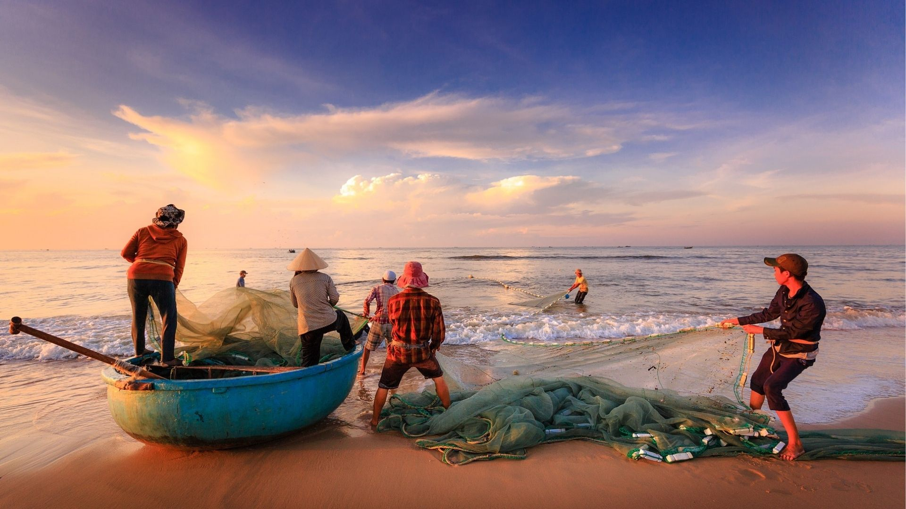
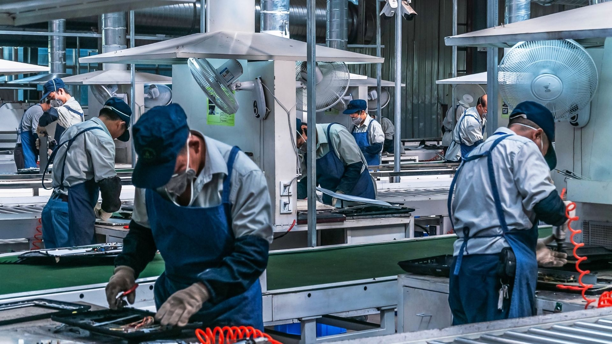
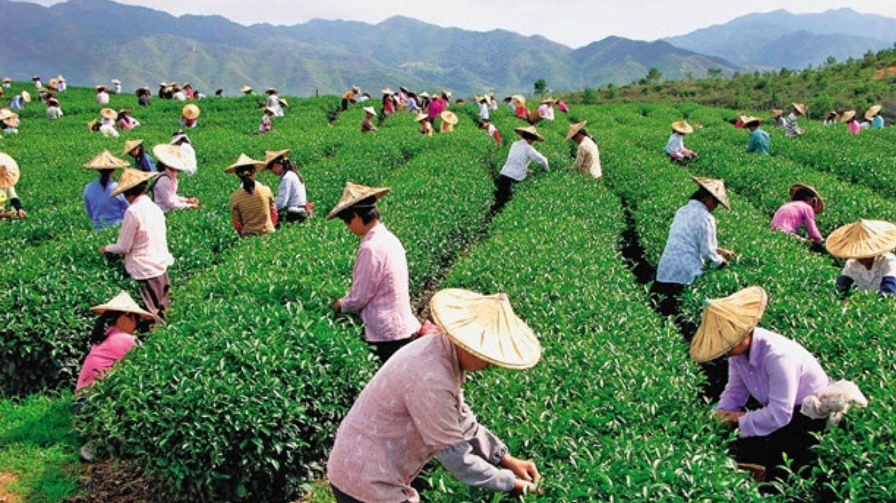

Pusat Strategi
Direktur Utama
Memimpin arah strategis perusahaan dan memastikan seluruh operasional berjalan sesuai visi, misi, serta standar profesional.

Membangun Masa Depan dengan Integritas dan Jangkauan Global. Menghubungkan Tenaga Kerja Indonesia dengan Peluang Internasional Terbaik.
PT Aida Duta Indonesia Sejahtera adalah agen perekrutan dan penempatan tenaga kerja internasional terkemuka yang didedikasikan untuk menjembatani talenta terbaik Indonesia dengan peluang global.
Fondasi kami dibangun di atas integritas mutlak, memastikan bahwa setiap profesional yang kami tempatkan dan setiap mitra yang kami layani mendapatkan standar keunggulan terbaik yang melampaui batas negara.

Mitra Penempatan Terverifikasi
PT Aida Duta Indonesia Sejahtera - Pelayanan Berstandar Internasional.
Verifikasi kandidat dan kebutuhan mitra secara terarah.
Pelatihan kesiapan kerja, bahasa, dan adaptasi budaya.
Pendampingan dokumen hingga proses penempatan selesai.
Menjadi pemimpin global dalam solusi sumber daya manusia profesional, diakui karena standar etika kami yang teguh dan kemampuan kami untuk memberdayakan generasi profesional Indonesia berikutnya di panggung dunia.
Menyediakan layanan penempatan pekerja migran yang aman, transparan, dan sesuai dengan peraturan yang berlaku.
Meningkatkan kompetensi tenaga kerja melalui pelatihan yang berkualitas sebelum diberangkatkan.
Memberikan perlindungan dan pendampingan kepada pekerja migran sebelum, selama, dan setelah bekerja di luar negeri.
Membangun kemitraan strategis dengan perusahaan pengguna tenaga kerja di luar negeri.
Memimpin arah strategis perusahaan dan memastikan seluruh operasional berjalan sesuai visi, misi, serta standar profesional.
Mengkoordinasikan proses rekrutmen, pelatihan, penempatan, dan administrasi agar layanan berjalan terintegrasi.
Menangani seleksi, verifikasi, dan kesiapan calon pekerja migran.
Mengelola program peningkatan kompetensi, bahasa, dan adaptasi budaya kerja.
Mengatur dokumen, perizinan, dan kebutuhan administrasi keberangkatan tenaga kerja.

Proses screening dan penempatan tenaga kerja yang terstandarisasi guna memastikan kecocokan kompetensi antara calon karyawan dan perusahaan.

Program pelatihan yang dirancang untuk meningkatkan kompetensi dan kemampuan teknis, soft skill, serta adaptasi budaya kerja.

Bimbingan lengkap mulai dari persiapan dokumen, legalisasi, hingga proses pengurusan visa dan izin kerja sesuai peraturan imigrasi yang berlaku
Kami menyediakan berbagai peluang kerja internasional melalui sektor-sektor unggulan yang telah bekerja sama dengan negara-negara mitra kami.

01
02
03
Hong Kong

Taiwan

Japan

Singapore

Malaysia

Proses bimbingan intensif bahasa, fisik, dan kedisiplinan kerja asing.

Seremoni pelepasan keberangkatan resmi pekerja migran menuju negara penempatan.

Penandatanganan ekspansi aliansi strategis bersama dengan korporasi dunia.

Sertifikasi resmi dan validasi keahlian teknis calon pekerja migran.
Hubungi tim kami untuk mengeksplorasi peluang karir internasional terpercaya atau bermitra untuk kebutuhan rekrutmen perusahaan Anda.